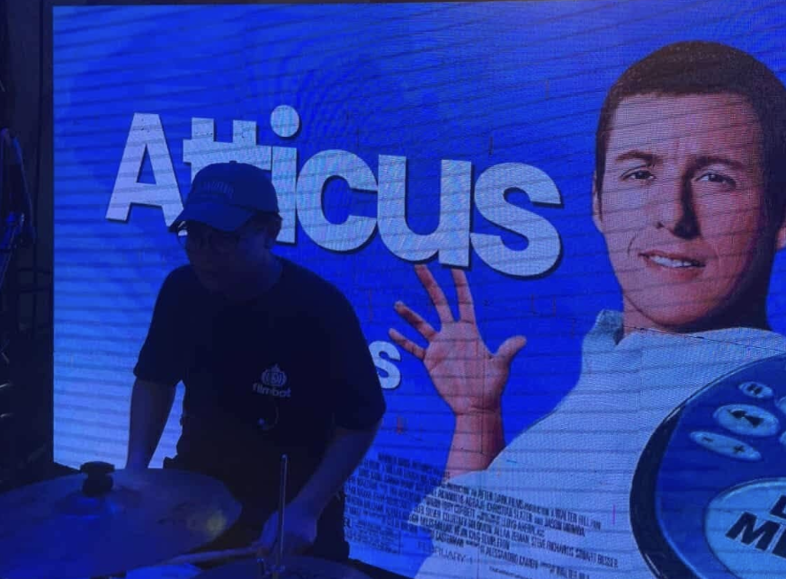
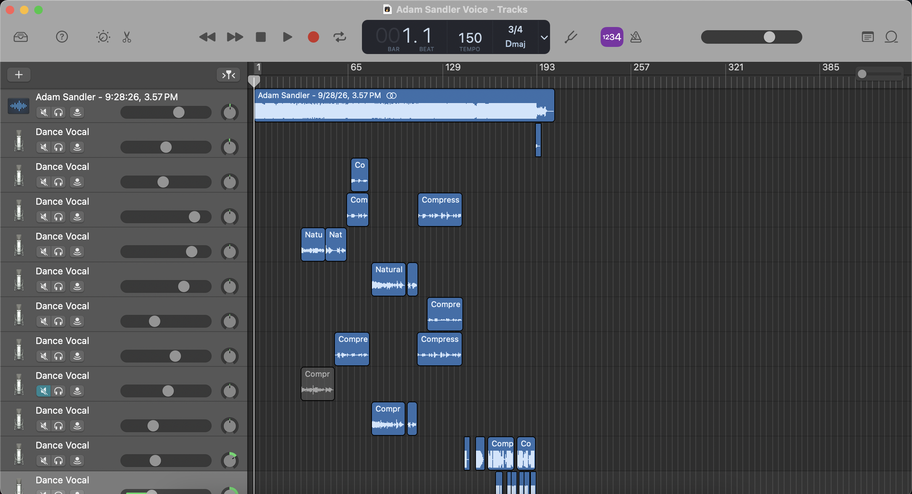
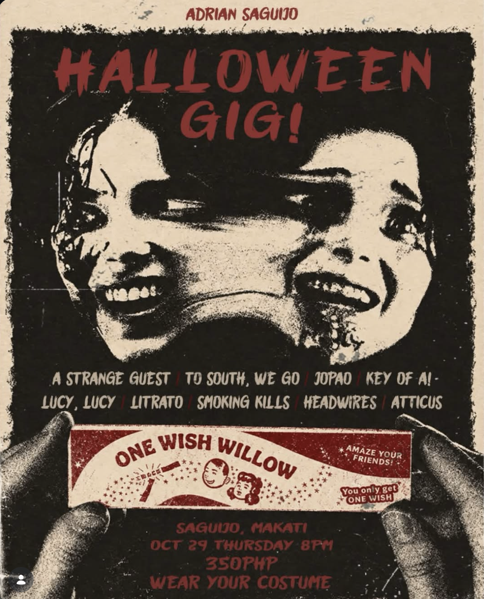
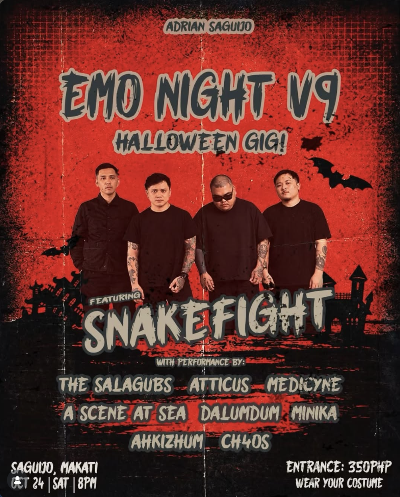
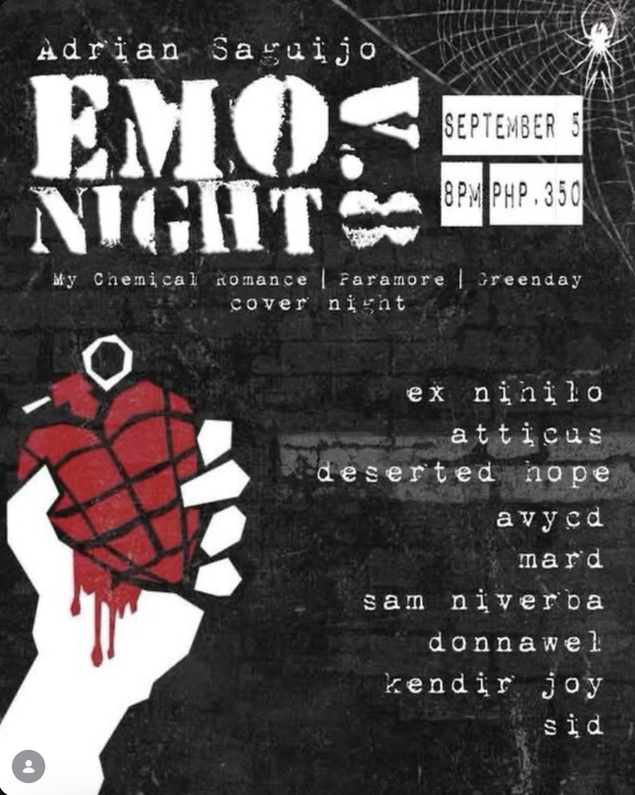

Writing and producing a song called Adam Sandler about the actor, Adam Sandler. The song is based off a line from Adam Sandler's movie, "Click", where he asks his future wife, "Will you still love me in the morning?". This song is going full emo with heavy guitar sounds and hard hitting drums.



Creating event posters for local gigs. Whether it be my gigs or someone else's, having a poster is always good for promoting the event and getting more people to attend. It also allows me to practice and improve my skills in desinging and layouts.